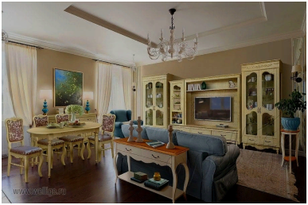
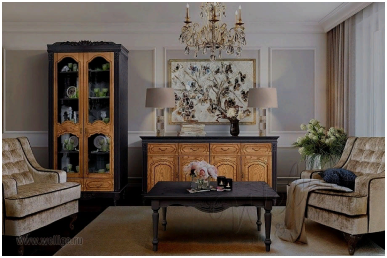

Стиль прованс воссоздает знакомый многим, ставший уже классическим, образ французской провинции. Такому интерьеру свойственны естественность, мягкость форм и нежность оттенков. Каждый элемент обстановки рождается из ассоциаций с безоблачным небом, лазурными берегами и бескрайними полями французских деревень.
Прованс больше подходит для просторных помещений, потому что «воздух» здесь является полноправным элементом интерьера. Соответственно, для небольших комнат лучше выбрать другой стиль или использовать лишь несколько элементов прованса. Но для целостности интерьера квартиры или дома лучше, если все комнаты будут выдержаны в одном направлении.
Сделать комнату уютной помогают дополнительные детали, именно поэтому для прованса так важна площадь помещения. Дизайн интерьера в стиле прованс предполагает обилие комнатных растений, а также декора в виде картин и статуэток. А обилие естественного света поможет еще раз подчеркнуть прелесть каждой детали оформления.


В качестве основных характеристик прованса можно выделить:
оформление в нежных, пастельных оттенках;
использование натуральных материалов;
любовь к деревянной мебели;наличие потолочных балок;
обилие комнатных цветов;
присутствие натуральных тканей;
рюши и кружева в декоре;
украшения из фарфора и керамики.
оформление в нежных, пастельных оттенках;
использование натуральных материалов;
любовь к деревянной мебели;наличие потолочных балок;
обилие комнатных цветов;
присутствие натуральных тканей;
рюши и кружева в декоре;
украшения из фарфора и керамики.